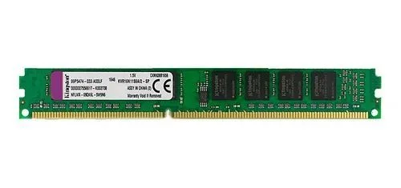
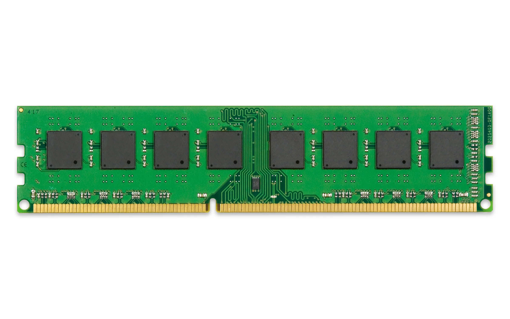
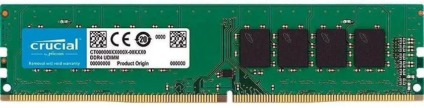
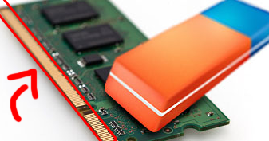

Memoria RAM
•A palavra RAM é uma sigla, vinda do inglês, originalmente sendo Random Acesss Memory(Memória de Acesso Aleatorio)
•A função básica é manter os programas que você usa carregados para serem usados.
•quando um programa ou dados é aberto, ele é carregado na Memória RAM.
Quais são os tipos de memória RAM?
Existem vários tipos ou classificações de memória RAM, que se diferenciam pela tecnologia, capacidade, velocidade, formato e outras características. Os principais tipos de memória RAM são:
•SDRAM: Synchronous Dynamic Random Access Memory, ou Memória Dinâmica de Acesso Aleatório Síncrona em português. É um tipo de memória RAM que sincroniza a sua frequência com a do barramento do sistema, que é o canal de comunicação entre o processador e a memória RAM. Este padrão é a base de funcionamento de praticamente todos os módulos de memória até a atualidade, com evoluções. A SDRAM tem uma frequência máxima de 133 MHz e uma capacidade máxima de 512 MB por módulo.
•DDR: Double Data Rate, ou Taxa de Dados Dupla em português. É um tipo de memória RAM que transfere o dobro de dados por ciclo de clock, ou seja, por cada pulso elétrico que sincroniza a sua frequência com a do barramento do sistema. A DDR tem uma frequência máxima de 400 MHz e uma capacidade máxima de 1 GB por módulo.
•DDR2: Double Data Rate 2. É um tipo de memória RAM que é uma evolução da DDR, com uma frequência máxima de 266 MHz, 1066 MT/s e uma capacidade máxima de 4 GB por módulo. A DDR2 também tem uma tensão menor do que a DDR, o que reduz o consumo de energia e o aquecimento da memória RAM.

•DDR3: Double Data Rate 3. É uma evolução do padrão DDR2, com uma frequência máxima de 1066 MHz, 2133 MT/s e uma capacidade máxima de 16 GB por módulo. A DDR3 também tem uma tensão menor do que a DDR2, o que reduz ainda mais o consumo de energia e o aquecimento da memória RAM.

DDR4: É um tipo de memória RAM que é uma geração superior à DDR3, com uma frequência máxima de 1600 MHz, 3200 MT/s e uma capacidade máxima de 64 GB por módulo. A DDR4 também tem uma tensão menor do que a DDR3, o que reduz ainda mais o consumo de energia e o aquecimento da memória RAM. Além disso, a DDR4 tem a introdução nativa dos recursos CRC (Cyclic Redundancy Check) e checagem de paridade, que verifica e corrige erros na transmissão dos dados.

Como limpar a memória RAM?
Passo 1. Desligue o computador e desconecte todos os cabos de energia elétrica que estão ligados ao gabinete;
Passo 2. Depois, abra o gabinete do computador;
Passo 3. Pressione os dois prendedores laterais para baixo, até que eles soltem o pente de memória;
Passo 4. Com o pente livre, segure nas extremidades dele e retire-o do slot, sem forçar e sem tocar em outros locais (é importante evitar tocar em outras partes do pente para não danificá-lo com a energia estática do seu corpo). Se ao tentar retirá-lo você perceber alguma resistência, verifique se o pente realmente está desencaixado dos prendedores laterais;
Passo 5. Continue segurando o pente de memória pelas extremidades e esfregue uma borracha em toda área de contato dele (a faixa amarela que fica na parte inferior do pente). Repita o processo no outro lado do pente;
